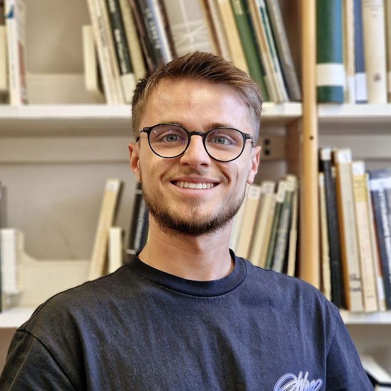
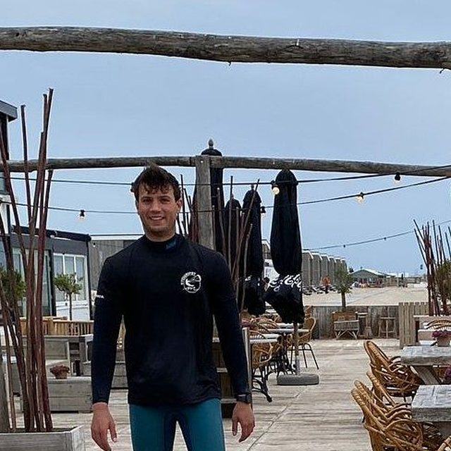
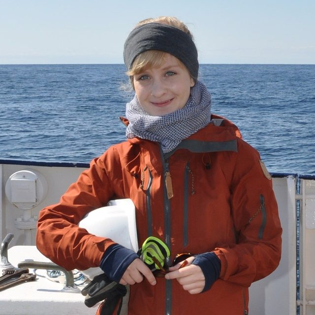
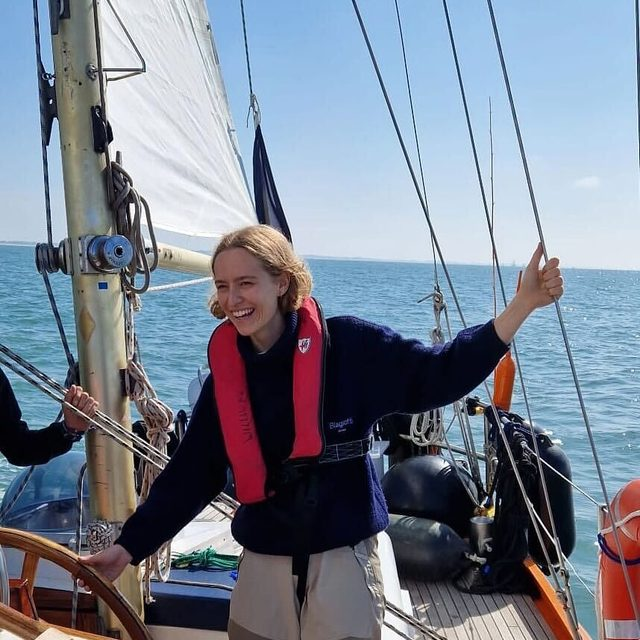
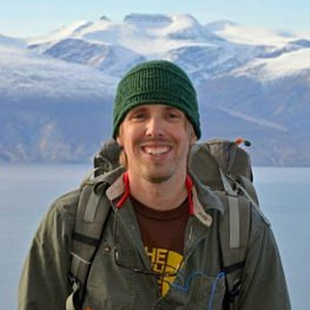
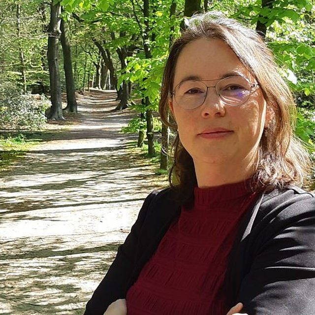

Get to Know Us
- Meet the team members behind the science.
The founders

The scientific team
Matthieu BUISSON
CNRS Postdoctoral Researcher at CEREGE, France
 Sonia CHAABANE
IRD Researcher at CEREGE, France
Maxime FELIX
CNRS Marine Biogeochemistry Research Engineer at CEREGE, France
Marine JAUMON
PhD Student at CEREGE and LOV, France
Hinne VAN DER ZANT
PhD student at LIttoral ENvironnement et Sociétés (LIENSs), France
Sonia CHAABANE
IRD Researcher at CEREGE, France
Maxime FELIX
CNRS Marine Biogeochemistry Research Engineer at CEREGE, France
Marine JAUMON
PhD Student at CEREGE and LOV, France
Hinne VAN DER ZANT
PhD student at LIttoral ENvironnement et Sociétés (LIENSs), France
 Jaime Y. SUÁREZ-IBARRA
CNRS Postdoctoral Researcher at CEREGE, France
Astrid HYLÉN
Postdoctoral researcher at CEREGE, France
Katoo DECLERCK
Biologist Intern at CEREGE, France
Jaime Y. SUÁREZ-IBARRA
CNRS Postdoctoral Researcher at CEREGE, France
Astrid HYLÉN
Postdoctoral researcher at CEREGE, France
Katoo DECLERCK
Biologist Intern at CEREGE, France




Collaborators on current projects

Ronnie GLUD
Professor at Southern Denmark University, Denmark
Hadal biogeochemist

Dimitris MENEMENLIS
Research scientist at the Jet Propulsion Laboratory, NASA, USA
Earth system modeler
Christian TAMBURINI
CNRS Research Scientist at MIO, France
Abyssal microbiologist
